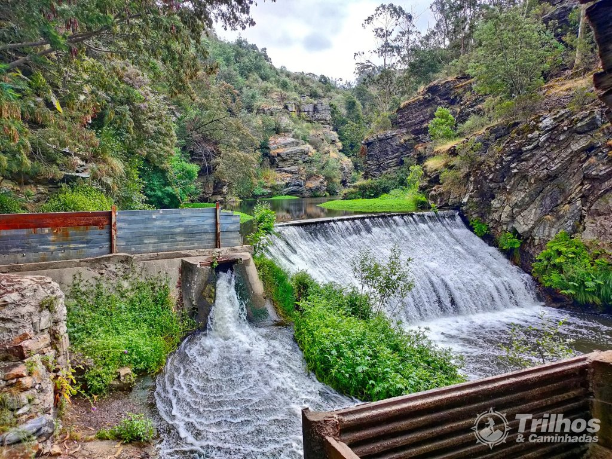
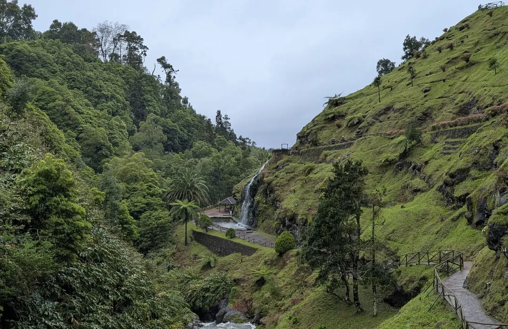
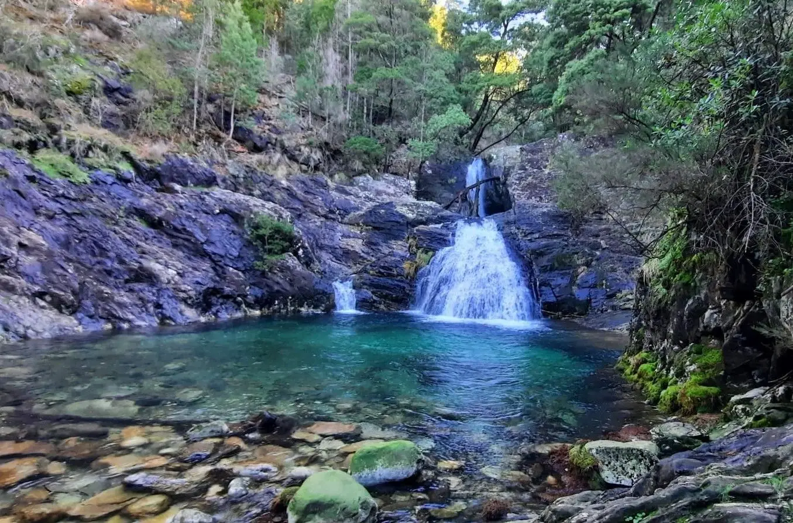
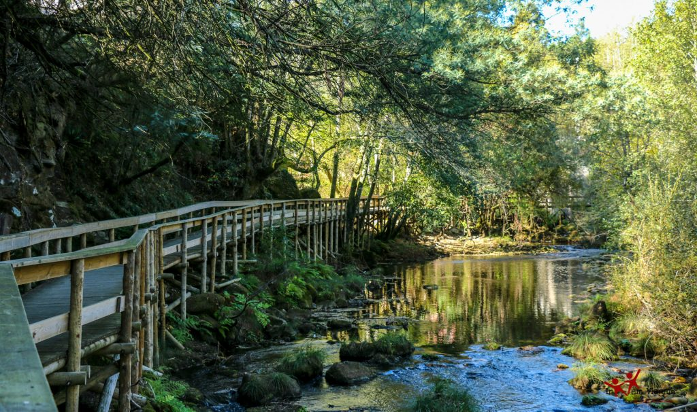
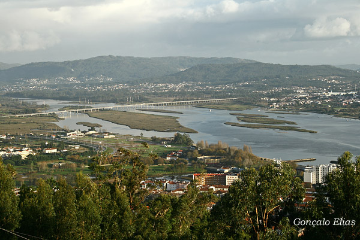
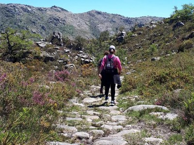
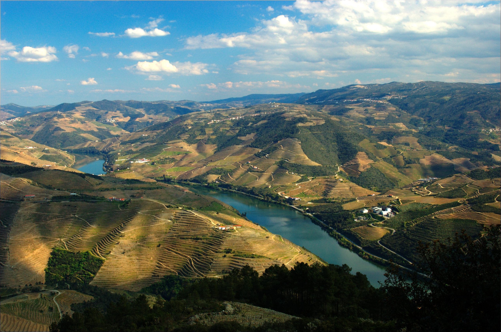

Descubra os caminhos mais deslumbrantes da região de Ponte de Lima
Reservar AgoraExplore os melhores percursos naturais da região de Ponte de Lima e arredores

Este trilho circular é bastante popular e leva os visitantes ao longo de uma zona de vegetação densa, atravessando moinhos antigos e rios. É uma ótima forma de conhecer a natureza local e a história da região.

Este é um dos trilhos de curta distância que passa pela Ribeira de Calheiros. Durante o percurso, os visitantes podem observar a fauna local e desfrutar da tranquilidade das águas do rio.

Embora não seja em Ponte de Lima, o Parque Nacional da Peneda-Gerês está a uma curta distância de lá. Oferece trilhos mais longos e desafiantes, incluindo o famoso Trilho de Mata da Albergaria.

Este trilho leva os visitantes à Serra de Arga, uma montanha de grande beleza natural, situada um pouco fora de Ponte de Lima. A serra é famosa pela sua biodiversidade e pela vista deslumbrante que proporciona.

Este é outro trilho de beleza ímpar, que segue ao longo do Rio Vez, perto de Ponte da Barca (também na região do Lima, perto de Ponte de Lima). O trilho oferece uma combinação de paisagens ribeirinhas e vegetação exuberante.

Para quem gosta de observação de aves e vida selvagem, esta área protegida é um ótimo local para explorar a natureza local. Existem trilhos e passadiços que permitem aos visitantes percorrerem áreas de grande beleza natural junto ao rio.
Descubra outros percursos naturais imperdíveis na região

Este é um trilho de curta distância e de fácil acesso, que leva até um miradouro com uma vista fantástica sobre a região de Ponte de Lima e o Rio Lima. A caminhada é tranquila e oferece momentos de calma e relaxamento.

Esta rota inclui vários miradouros ao longo de trilhos que permitem aos visitantes ter vistas panorâmicas de toda a região de Ponte de Lima e dos seus arredores. É possível incluir diferentes percursos que vão de fáceis a mais desafiantes.
Explore no mapa os principais trilhos naturais da região